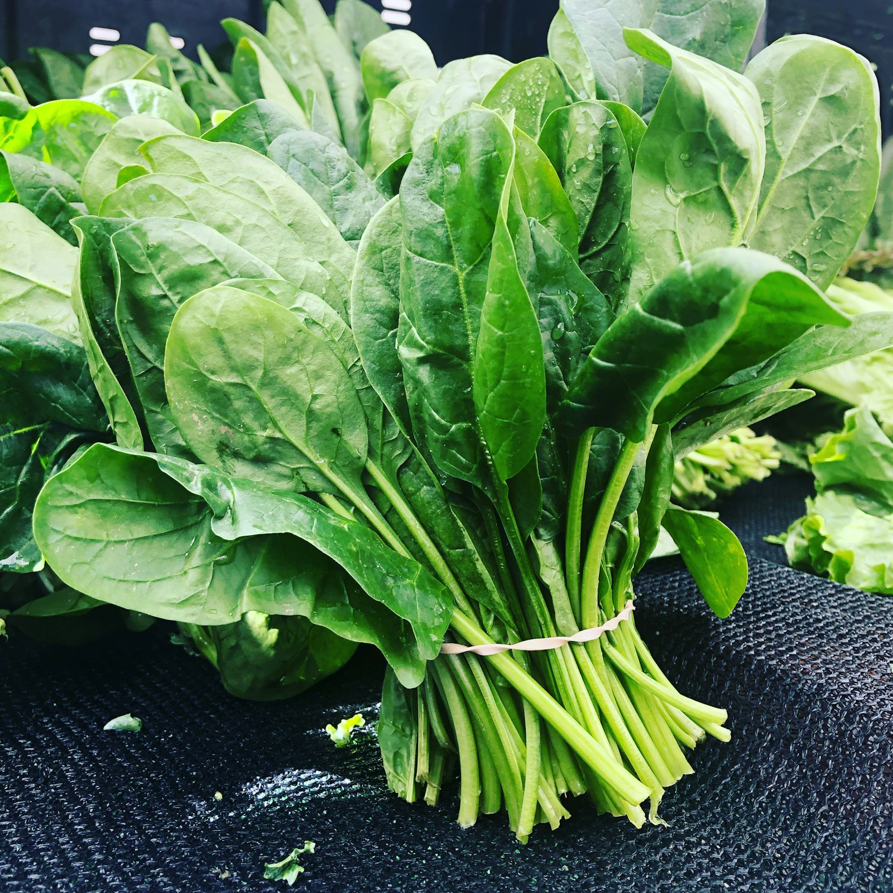
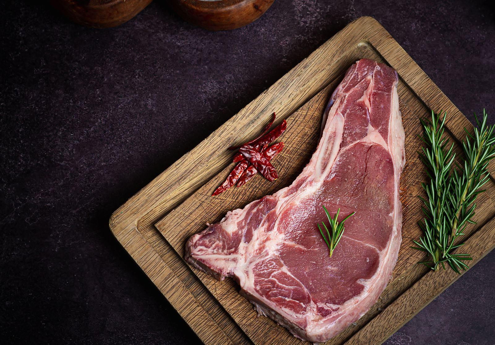
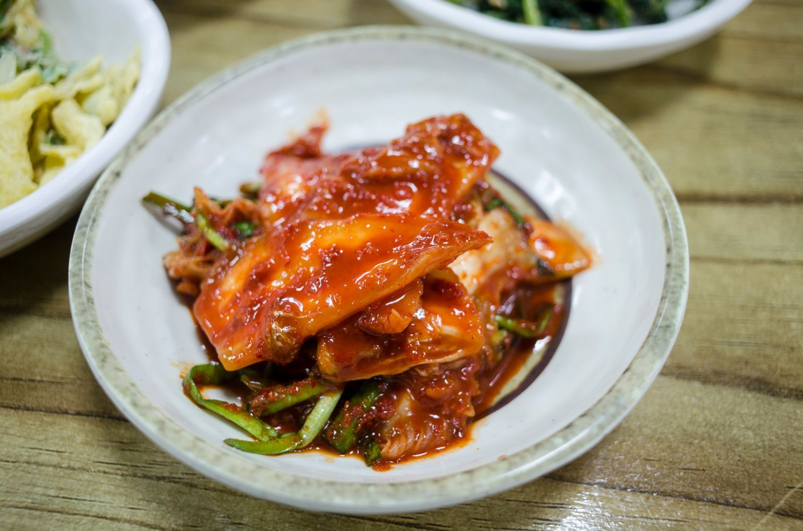

D-vitamin
D-vitamin: a csonthoz elég a bizonyíték, a rákmegelőzéshez nem
A csonthoz elég a bizonyíték. A rákmegelőzéshez ez a cikk szerint nem.
Fotó: Pavel Danilyuk, Pexels
Legutóbbi írás: 2026. szeptember 29.104 írás
Nem orvosi tanács: a lap nem diagnosztizál, és nem ír fel készítményt.

Legutóbbi írás · Kreatin
Egy 2026-os összesítés egészséges fiatal férfiaknál azt találta: a zsírmentes és a sovány tömeg csak erősítő edzés mellett nőtt. Az anaerob teljesítmény edzésformától függetlenül is eltért.
Fotó: Pexels, ingyenes licenc. Ugyanaz a kép, mint a cikkben.
D-vitamin
A csonthoz elég a bizonyíték. A rákmegelőzéshez ez a cikk szerint nem.
Fotó: Pavel Danilyuk, Pexels

Omega-3
Az EPA és a DHA a sejthártya része. Az egészséges felnőttek szívinfarktusának megelőzését egy nagy vizsgálat mégsem igazolta.
Fotó: Unsplash

Magnézium
Izom, ideg, csont, fehérje és DNS. A vérnyomásra és a migrénre csak szerény, korlátozott adat van.
Fotó: Unsplash

C-vitamin
A sejtvédelem és a skorbut nem ugyanaz a mondat, mint a rákmegelőzés.
Fotó: Unsplash

Vas
A vas a vér oxigénszállításához kell. A kapszula nem automatikus válasz fáradtságra.
Fotó: Pexels

Fehérje
A fehérje építi és javítja az izmot. A sportoló a NIH szerint többnyire ételből is fedezheti a szükségletet.
Fotó: Unsplash

Koffein
A koffein élénkít. A NIH szerint az állóképességben és a szakaszos sportban segíthet, a rövid sprintben nem.
Fotó: Nathan Dumlao, Unsplash

Probiotikum
A törzs számít, nem a fermentált szó maga.
Fotó: Pexels

Kreatin
A kreatin az izomban van. A sportorvosok a rövid, intenzív ismétlésekre látnak hasznot, az állóképességre nem.
Fotó: Pexels